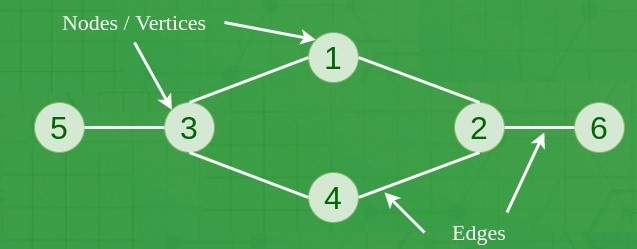

A Graph is a non-linear data structure consisting of vertices and edges. The vertices are sometimes also referred to as nodes and the edges are lines or arcs that connect any two nodes in the graph. More formally a Graph is composed of a set of vertices( V ) and a set of edges( E ). The graph is denoted by G(E, V).
A vertex or node is a fundamental unit in a graph. It represents a point in the graph.
An edge is a connection between two vertices in a graph. It may have a direction (directed edge) or not (undirected edge).
In a directed graph (digraph), edges have a direction, indicating a one-way connection between two vertices.
In an undirected graph, edges do not have a direction, and the connection between two vertices is bidirectional.
A weighted graph assigns a weight or cost to each edge, representing a numerical value associated with the connection between two vertices.
Two vertices are said to be adjacent if there is an edge connecting them.